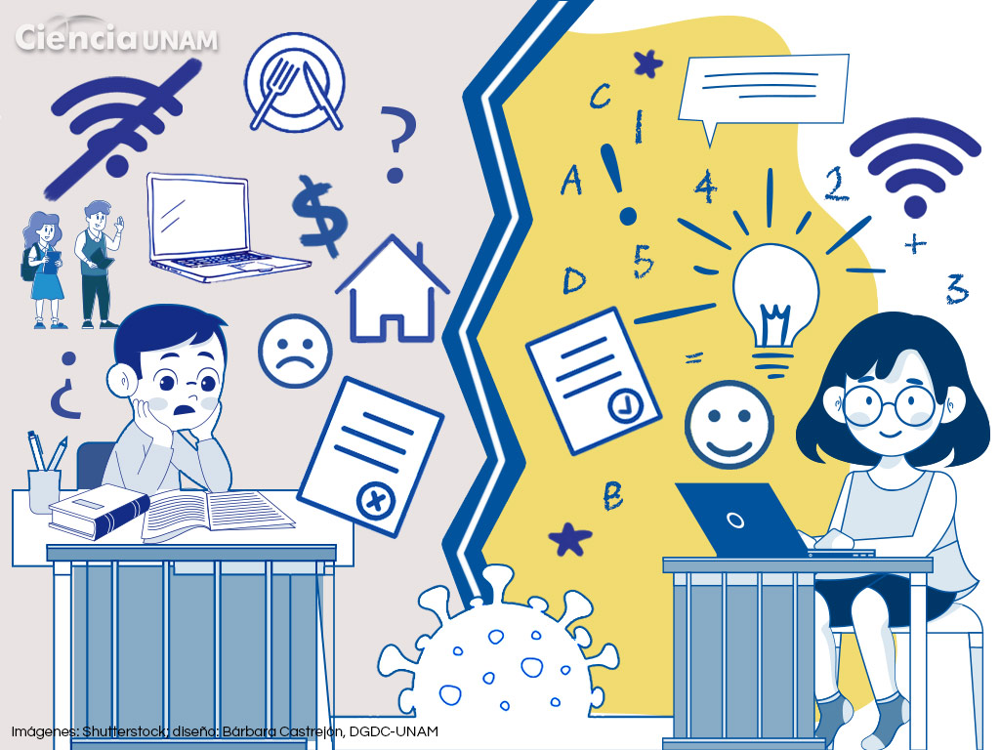

Dejar los estudios no es solo una decisión académica; es una decisión que altera el rumbo de la vida personal, financiera y social de un individuo a largo plazo.

Oportunidades Laborales Escasas
El mercado de trabajo actual es altamente competitivo. No contar con un certificado de estudios limita tu acceso a empleos formales y estables.
- Exclusión de filtros: Descarte automático en sistemas de selección.
- Exigencia física: Empleos con mayor desgaste y menos beneficios.
Inestabilidad Económica
Existe una correlación directa entre el nivel educativo y los ingresos percibidos a lo largo de la vida laboral:
- Brecha salarial: Diferencia de ingresos de hasta un 60%.
- Falta de prestaciones: Sin seguro médico ni fondos de retiro.
Limitaciones en el Desarrollo
La educación fomenta habilidades críticas para la vida diaria y la resolución de problemas complejos:
- Pensamiento Crítico: Capacidad de analizar y evitar malas decisiones.
- Autoestima: Impacto en la seguridad personal ante nuevos retos.
Impacto Social y Ciudadano
Un ciudadano con educación concluida tiene mejores herramientas para participar activamente en su comunidad:
- Red de contactos: Vínculos que facilitan el éxito profesional.
- Ciclo generacional: Mejora las expectativas de los futuros hijos.